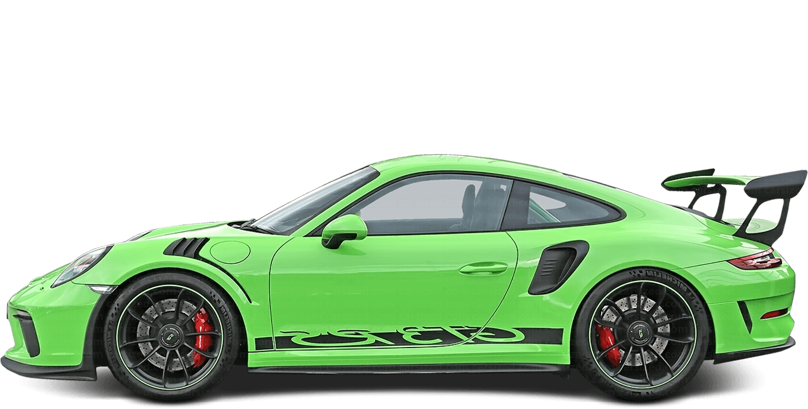
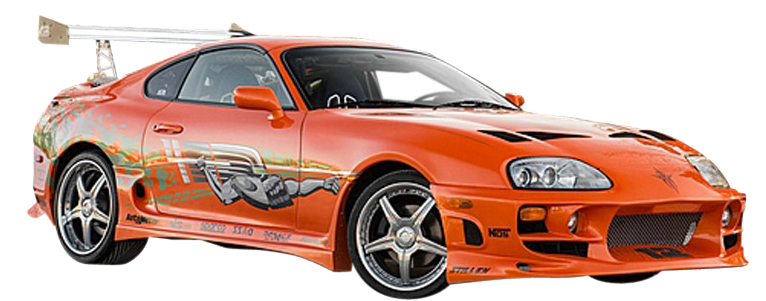

On this page you will see my top three favorite Cars.
 The Porsche 911 GT3 RS is a high-performance sports car engineered for both the track and the road. Aerodynamics play a significant role in its design, with a massive rear wing, aggressive front splitter, and extensive use of carbon fiber to enhance downforce and reduce weight.
The BMW M3 Competition is a powerful and refined performance sedan that blends everyday usability with track-ready capabilities. Aggressive styling cues like the large kidney grille, flared wheel arches, and quad exhaust tips underline its performance pedigree, while the interior features M-specific enhancements such as sport seats, carbon fiber trim, and advanced digital displays.
 The Toyota Supra Mk4, produced from 1993 to 2002, is a legendary icon in the sports car world, celebrated for its timeless design and immense tuning potential. The Supra Mk4 gained cult status thanks to its role in motorsports, street racing culture, and its prominent appearance in films like The Fast and the Furious.